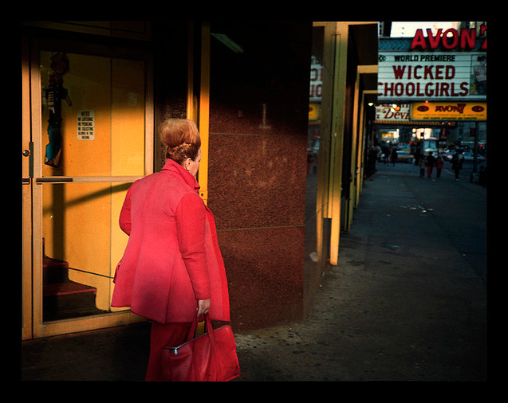

All dressed in 1980s pink, turning off of 49th Street onto 7th Avenue, heading downtown, I think. To her left was a brand new Popeye’s Chicken that never seemed to have more than three people in it at any given time. Across 7th Ave, there was one of the best video arcades ever, Fascination. Downtown, the porn started with the Avon 7.